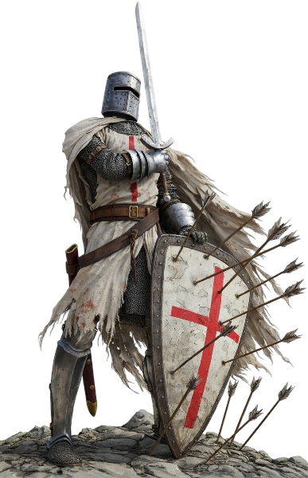

Keresztény katonai, pénzügyi rend

Alapítva: 1118–1119 körül Jeruzsálemben
Alapító: Hugues de Payns és 8–9 társa
Elsődleges cél: védelmezni a Szentföldre zarándokló keresztényeket a rablóktól
Székhely: a jeruzsálemi Templom-hegy romjain (Salamon-temploma)
A keresztes hadjáratok legerősebb harcosai
Birtokok egész Európában
Flotta, saját pénzverés, nemzetközi hálózat
1307. október 13.: IV.Fülöp francia király letartóztatja őket Franciaországban
Vádak: eretnekség, Baphomet-imádás, homoszexualitás, kereszt leköpése
Vagyon nagy része a Johannitákhoz került